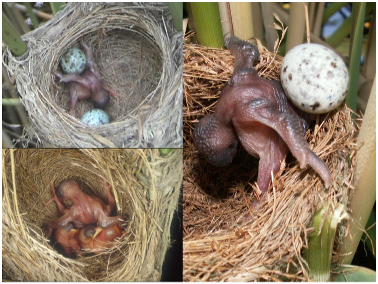
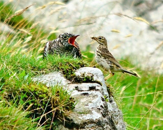
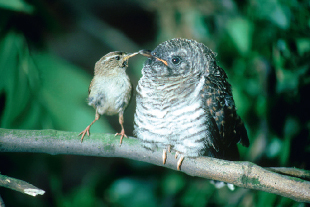
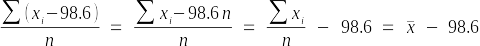

Today we will analyze grouped data in two different ways: a) as a general linear model (GLM) and b) as a dummy-coded regression. Since GLM expresses all analyses as regressions, we expect that both of these approaches will give identical results. By comparing the output we get from each approach we can practice interpreting GLM output when we are using it to conduct an analysis of variance on grouped data. We will also learn how to take advantage of the tests of coefficients that are part of the standard GLM output, but not part of the standard ANOVA output in R.
The data we will use today gives the length of European cuckoo eggs laid in nests of various host species (if you have taken Biol 215 here you probably recognize it). European cuckoos are nest parasites, which means they do not build nests of their own, but instead place their eggs in the nests of other "host" bird species. They have been observed laying their eggs on the ground, picking them up in their beaks, and then depositing them in a host nest nearby.
These host species raise the cuckoo chick as its own, even though the cuckoo chick is often much larger than the host species' chicks. Cuckoo chicks hatch quickly and grow rapidly after hatching, and are able to actively eject the host species' eggs from the nest. Hosts often end up raising only the cuckoo chick.
As the cuckoo chick reaches full size, it may be substantially larger than the host adults. This open-mouthed chick is being fed by a meadow pipit.
European wrens are one of the host species cuckoos use. Wrens are quite a bit smaller than other host species, like meadow pipits, and you can see from this picture of a wren feeding a cuckoo chick that raising a cuckoo is a heavy burden for such a small host. At some point the food needs of the cuckoo chick could exceed the host pair's foraging ability, and the cuckoo chick may starve. The size of the egg is related to the size of the chick, such that smaller cuckoo eggs tend to give rise to smaller chicks.
Given this, it seems likely that a female cuckoo's reproductive success would increase if she matched her egg sizes to the size of the host species. The question we are asking is, are cuckoo egg lengths different in different host species nests? We have data measured by Oswald Latter in 1902 using cuckoo eggs collected from nests of various host species to address this question.
Instructions
To begin, start a new project in R Studio for today's activity in a new folder. Download this data file, and save it to your project folder. Download this R markdown file and save it in your project folder as well, and open it in R Studio.
By the way, Mac users... it seems that Safari likes to rename these Rmd files by adding a .txt at the end of them. If this is happening to you, you will need to rename the file before you can use it - find it in the Files tab of R Studio, check the box next to the file, click Rename, and delete the .txt that was added. This seems to be something that Safari does but Chrome and Firefox do not, so if you're comfortable using one of those browsers you can avoid the issue.
R's general linear model function is lm(). It is sophisticated enough to dummy-code our categorical variables for us, and once you understand how a GLM is working we will let it do that work for us. To help you learn how the GLM works we will do some dummy coding by hand, and then see how using dummy coded variables in a regression model allows us to ask exactly the same question we would ask if we used an ANOVA on group means.
First analysis: two host species
Recall from lecture that when there are only two groups, we need only a single numeric dummy variable. The dummy variable is assigned either a 1 or a 0 depending on the factor level, and then that numeric dummy variable is used as our predictor in a simple linear regression. The results of this analysis should be identical to the results of an ANOVA comparing the two group means. We will demonstrate this with just two host species, European wrens and tree pipits, first.
A. Dummy coding the two species data
1. Import the "two_sp" Excel worksheet into R Studio, and call the R data set "twosp". You will see there are 15 measurements of cuckoo egg length for each of two host species, the wren and the tree pipit.
2. The first thing we need to do is to make a dummy-coded version of the Species column. Our dummy column will be named for one of the species - it doesn't matter which one we use, but R uses the level that is first alphabetically to be the 0 category, so we'll do the same by using Wren as the dummy variable name. The Wren column will have a 1 for rows in which "species" is Wren, and a 0 for any other species (with just two species it will have a 0 when species is Tree Pipit). First we will write a statement that evaluates if each row of the species column is "Wren", like so (in the console):
twosp$species == "Wren"
**CAREFUL**, it's important to use two equal signs here - a single equal sign is an assignment, equivalent to <-, which assigns the right side of the expression to the left, so if you only use one equal sign you will set every row of the species column to contain Wren. Using two equal signs makes this expression a comparison, which compares the contents of the species column to the value of "Wren", and returns TRUE when the species is a wren, and FALSE when it is not. Since the wrens are in the first 15 rows of the file you should see 15 TRUEs followed by 15 FALSEs. If you accidentally used just one equal sign don't despair, you can fix the expression and then re-import the data by running your read_excel() command again (R Markdown is your friend).
Now, this command is returning TRUE and FALSE, when what we want is 1's and 0's. As far as a computer is concerned, a comparison like this is a boolean comparison, and the return values of TRUE and FALSE are a boolean variable. Even though what we are seeing on the screen are the words "true" and "false", what is actually stored for a boolean variable is either a 0 (which is interpreted as false), or a 1 (which interpreted as true). Given this, we can convert this set of TRUEs and FALSEs to 1's and 0's by converting the boolean variable to a numeric variable - modify your command in the console to:
as.numeric(twosp$species == "Wren")
You should now see fifteen 1's followed by fifteen 0's, instead of TRUE's and FALSE's. Note that this wouldn't work if we had the words "true" and "false" in our variable instead - for example, the command (in the console):
as.numeric(c("TRUE", "FALSE"))
makes a vector with the words "TRUE" and "FALSE" in it and then tries to convert those words to numbers, which gives us an error. The quotes around the words cause R to treat them as character data rather than as boolean data, so the conversion to numbers doesn't make sense (it makes as much sense to R as asking to convert the words "dog" and "horseshoe" to numbers).
Now, to complete this step we want to assign these 1's and 0's to a dummy-coded variable called "Wren" in the twosp data set. Add this command to the twosp.dummy code chunk of your R markdown file:
as.numeric(twosp$species == "Wren") -> twosp$Wren
Your twosp data frame should now have three variables, including this new Wren variable that has a 1 when species is "Wren", and 0 when species is "Tree Pipit".
B. Look at your data
We should always look at the data before we analyze it, so let's plot the means and error bars for each species.
We will use the summarySE() function from the Rmisc library that you installed last time to get our summary statistics. In the twosp.sumstats chunk of your R markdown file enter the command:
library(Rmisc)
summarySE(twosp, "length", "species") -> twosp.sumstats
The summarySE() function takes the name of a data set as its first argument, the name of the variable to be summarized as its second argument (in quotes, "length"), and the grouping variable as the third argument ("species"). The summary statistics are then assigned to twosp.sumstats.
Now to plot the means and confidence intervals with ggplot, you will need to (in the twosp.plotmeans code chunk of your R markdown file):
...load the ggplot2 library:
library(ggplot2)
..set species as the x-axis variable, and "length" as the y-axis variable, add points for the means, and add error bars that use length - ci for ymin, and length + ci for ymax:
ggplot(twosp.sumstats, aes(x = species, y = length)) + geom_point() + geom_errorbar(aes(ymin = length - ci, ymax = length + ci), width = 0.1)
For the daphnia data we use the mean + se for ymax and the mean - se for ymin, but we switched to 95% confidence intervals this time - ci is the width of the confidence intervals. The plot will give you a mean for Tree Pipit and a mean for Wren, and the 95% CI's for each mean. You'll see that Wrens are smaller, and the confidence intervals are clearly non-overlapping. You would expect that the ANOVA should be significant given this.
Take a look at the plot - you have set Wren to 1, and Tree Pipit to 0 in your dummy-coded column. When you use regression to analyze the differences between the groups, which species mean will be equal to the intercept term? Click here to see if you're right.
Should the slope coefficient on the Wren dummy variable be positive or negative? Click here to see if you're right.
C. ANOVA using a General Linear Model
1. We used the aov() function to do ANOVA in our review exercise, and used lm() for regression, but this time we will use the lm() function for both. The lm() command is R's general linear model command, and will be our workhorse from now on.
We're expecting that using a dummy-coded numeric predictor will give us the same results as if we had used an ANOVA with our grouped data. To see if that's the case we need to run an ANOVA using species as the grouping variable first, so we can compare it to our dummy-coded regression. To get our ANOVA use the commands (in the R markdown file):
lm(length ~ species, data = twosp) -> twosp.anova.lm
anova(twosp.anova.lm)
The first command conducts the analysis, and the second produces the ANOVA table. You will see that even though this is the command we used for regression in our review exercise you get a typical ANOVA table - there is a single term for species with 1 degrees of freedom, reflecting that there were two levels for species (model df is number of groups minus 1). The row label for the predictor is "species".
We can confirm that lm() used a GLM for this analysis by showing the coefficients (in your R markdown file, below the anova() function):
summary(twosp.anova.lm)
When you run the code chunk you will see that there is a coefficient labeled speciesWren, which is the slope coefficient for a dummy-coded Wren column that R creates internally (R names the dummy-coded coefficients for the name of the variable combined with the name of the level that is assigned a 1). R sets whichever level is first alphabetically to be the baseline group, which in this case was Tree Pipit. Since the intercept by definition is the mean when the predictor equals 0 the intercept coefficient is the mean for Tree Pipit. The slope is the change in length per one unit of change in the predictor - going from speciesWren = 0 to speciesWren = 1 is one unit of change in the predictor, and the slope coefficient for speciesWren is thus the difference in mean egg length between the Tree Pipit and the Wren.
Now that we know what the ANOVA table should look like, you can move on to using regression on Wren, the dummy-coded predictor we created ourselves.
D. Regression with dummy coded species
1. To do your regression analysis on your dummy coded Wren variable, use the command (in your R markdown file):
lm(length ~ Wren, data = twosp) -> twosp.regression.lm
2. Now that the model is fit, generate an ANOVA table using the command (keep adding to the same code chunk, below your regression lm()):
anova(twosp.regression.lm)
You'll see that the ANOVA table is exactly the same as the first one in which you used species as a categorical predictor, except that in this case Wren is shown as the predictor instead of species.
You can see the coefficients with the command (in the same twosp.regression code chunk, below your anova() command):
summary(twosp.regression.lm)
and they should match what you got in the previous step using species as a categorical predictor, except that the name on the slope will be Wren. The interpretation of the coefficients is also the same - the intercept is the Tree Pipit mean, and the Wren slope coefficient is the difference between the species mean egg lengths.
Now that you have an idea of how this works using a simple example with
only two species to compare, we'll repeat the procedure with six
species.
Six host species
A. Dummy coding the six species data.
1. Import the "all_sp" worksheet into an R data set called allsp.
2. Do the dummy coding - this is just like what you did when there are only two species, but now that there are six you will need to make five columns of dummy-coded variables. If you look at the levels in the species column (using levels(factor(allsp$species)) at the console) you'll see the list is:
[1] "Hedge Sparrow" "Meadow Pipit" "Pied Wagtail" "Robin" "Tree Pipit" "Wren"
R will use the first one alphabetically as the baseline, so we will do the same - we will skip Hedge Sparrow, but will make a column for Meadow Pipit, Pied Wagtail, Robin, Tree Pipit, and Wren. Spaces in column names are a pain, so replace spaces with periods in column names - for example, for the Meadow Pipit you would use (in your R markdown file):
as.numeric(allsp$species == "Meadow Pipit") ->
allsp$Meadow.Pipit
Do this for each of the remaining four species - make sure you change the name each time, and match the name in the comparison to the name of the dummy-coded column you're making.
Once you're done, open the allsp data set and confirm that you now have 7 variables, 5 of which are dummy coded species factor levels, and that the 0's and 1's in the dummy coded columns are correct (for example, the Meadow.Pipit dummy coded column should have 1's for every Meadow Pipit and 0's for every other species, Pied.Wagtail should have 1's for every Pied Wagtail and 0's for every other species, and so on).
B. Look at your data.
Produce another plot comparing means for the six host species in this data set, like you did for two species (you can use the species column for grouping).
Take a look at the plot - now that Hedge Sparrow is the species with 0 on all the dummy coded variables what will the intercept represent? Click here to see if you're right.
Should the coefficient on the Wren dummy variable be positive or negative? Click here to see if you're right.
C. ANOVA with a GLM
Conduct an ANOVA on these six species, as you did for the two species data set (put your command in the allsp.anova code chunk of your Rmd file). Use the same naming convention as we started using with two species - use allsp.anova.lm for the name of the model (note that this object gets used to extract coefficients, below, in step E. If the name of this object is different from the name used in step E the command will fail). You should see that, again, the ANOVA table you get looks like what you would expect for an analysis of variance comparing group means to one another - a single row labeled "species" with 5 degrees of freedom - even though you used the lm() command for the analysis. This means that while R uses multiple regression (i.e. regression with more than one predictor) to do the analysis, it knows to present the test of species in the ANOVA table as though we had done a traditional ANOVA, with species as the grouping variable.
D. (Multiple) Regression
What did the lm() command do, exactly, with the species variable? We can work through the steps by doing a multiple regression with our five dummy-coded variables, and then combining them into a single test of variation among species. We will learn more about multiple regression in the coming weeks, but for now you just need to know that we are still predicting a single response (length), using all five dummy-coded columns as predictors. This sounds complicated, but it's actually a simple extension of our regression command - all we need to do is to list all of the dummy-coded predictors in our model formula with + symbols between them (in your Rmd file, allsp.regression code chunk):
lm(length ~ Meadow.Pipit + Pied.Wagtail + Robin + Tree.Pipit + Wren, data = allsp) -> allsp.regression
I left it to you to do the naming for your dummy coded columns, so if you get a "not found" error check that the column names you are using for this command match what you used in your allsp data set. Note that the order of the predictors doesn't matter to the analysis, but R uses alphabetical order by default - keeping the dummy-coded predictors in alphabetical order will make the results match the R output.
To get the ANOVA table use (in the next line below your lm() command):
anova(allsp.regression)
The ANOVA table will look like this:
Analysis of Variance Table
Response: length
Df Sum Sq Mean Sq F value
Pr(>F)
Meadow.Pipit 1 1.767 1.7672 2.1567
0.1446995
Pied.Wagtail 1 2.202 2.2016 2.6869
0.1039311
Robin 1
0.209 0.2092 0.2553 0.6143459
Tree.Pipit 1 9.832 9.8319 11.9991
0.0007507 ***
Wren 1
28.800 28.8002 35.1486 3.329e-08 ***
Residuals 114 93.410
0.8194
---
Signif. codes: 0 ‘***’ 0.001 ‘**’ 0.01 ‘*’ 0.05 ‘.’ 0.1 ‘ ’ 1
The ANOVA table you get from this approach does not look like an analysis of variance comparing group means. Rather than a single row for species with 5 degrees of freedom, this table has a separate line for each dummy variable with 1 degrees of freedom each. But, this is in fact the same analysis as our ANOVA above, we just need to do some work to show it.
First, note that some things are identical already - the residual degrees of freedom and the residual SS are the same. The only thing that is different between our ANOVA and multiple regression models is how we are representing the species variable, but the random, unexplained variation in the data is the same regardless.
Second, note that the degrees of freedom we're using to model the effect of species on length is the same for both this model and the ANOVA. In a multiple regression each predictor is tested for its effect on the response separately, and each predictor consumes 1 degree of freedom. We needed five dummy variables to represent 6 species, so across all of the predictors we are using 5 degrees of freedom, which is the same as when we used species as a categorical predictor above.
The sums of squares explained by these 5 regression predictors is also the same as our species SS from the regression, if we sum across the five dummy-coded predictors. We can check this by extracting the sums of squares from the table and summing them - we will use this as an opportunity to practice extracting information from R objects.
First, put the ANOVA table in an object - this will make the commands needed to extract the SS simpler (in your R markdown file, in the allsp.check.ss chunk):
anova(allsp.regression) -> allsp.aovtable
The ANOVA table we get with anova(allsp.regression) is structured with several named components that we can use to pull out just the numbers we need. To see what the named components are use the command (in the console):
names(allsp.aovtable)
You'll see the output:
[1] "Df" "Sum Sq" "Mean Sq" "F value" "Pr(>F)"
The sums of squares are the second named component, called "Sum Sq". We can pull just the sums of squares with the command (in the console):
allsp.aovtable["Sum Sq"]
We're using the square brackets this time to extract a named component of allsp.aovtable, using the name to identify it. We could instead have used an index number, now that we know that Sum Sq is the second named element (in the console):
allsp.aovtable[2]
but using the name of the element is a good idea because it makes your code clearer, and more self-documenting.
The table has row names as well - you can see them with (still in the console):
rownames(allsp.aovtable)
The row names are:
[1] "Meadow.Pipit" "Pied.Wagtail"
"Robin"
"Tree.Pipit"
"Wren"
[6] "Residuals"
You'll see that the first five rows are named after the predictor variables we used, and the final row is named Residuals. We just want to sum the SS from the five dummy-coded predictors, so we can drop the Residuals row from the sum - we can do this either by putting the names of the five predictors in a vector to include them (in your R markdown file, in the same allsp.check.ss chunk right afer your anova() command):
sum(allsp.aovtable[c("Meadow.Pipit","Pied.Wagtail","Robin","Tree.Pipit","Wren"), "Sum Sq"])
This command gives you Sum Sq summed across all five dummy-coded predictors, and it should equal the species SS that you got in your ANOVA table.
Note that we could have used the row numbers instead, like so:
sum(allsp.aovtable[1:5, "Sum Sq"])
or simpler still, we could have dropped the sixth row to omit the residuals:
sum(allsp.aovtable[-6, "Sum Sq"])
Any of these would be fine, but I have a slight preference for naming what is being included to make the code easier to interpret.
Summing across the sums of squares for each predictor gives us the same SS as we got for species in our ANOVA. If the SS is the same, and the d.f. is the same (5 across the five dummy-coded preditors), then we can finish the rest of the calculations to get our ANOVA of species (done for you here):
- Divide the dummy coded predictor SS by the df to get the MS for the explained variation: 42.81/5 = 8.56
- Divide the MS for the explained variation by the residual MS to get an F ratio: 8.56/0.81 = 10.45
- Calculate the p-value for an F value of 10.45 with 5 numerator and 114 denominator degrees of freedom: according to the R command 1-pf(10.45,5,114), this is p = 2.85e-08 (this command calculates the p-value from an F distribution above 10.45 with 5 numerator and 114 denominator degrees of freedom)
You can see that since the variation explained collectively by the five dummy coded predictors is the same as the SS for the species term in our ANOVA, all the rest of the ANOVA table would be the same as well. When you run an ANOVA using the lm() function this is how it does the analysis.
E. Confirming that the coefficients are predicting species means
Let's double check that these multiple regression slopes really are giving us the mean for each species - first we can get the coefficients from the dummy coded multiple regression model (in the allsp.species.coefficients chunk of your R markdown file):
coefficients(allsp.anova.lm) -> allsp.coeff
Note that for this command to work you must use
the all species anova linear model object's name correctly. If you
used something other than allsp.anova.lm in step C, above, then use
the same name you used in C within the coefficients() command.
You can see what these values are by typing allsp.coeff at the console, and you will see:
(Intercept)
speciesMeadow Pipit speciesPied
Wagtail
speciesRobin speciesTree Pipit
23.11428571
-0.82095238
-0.22761905
-0.55803571 -0.03428571
speciesWren
-1.99428571
The Intercept is supposed to be the mean for Hedge Sparrow, and you can confirm this is true by looking at the allsp.sumstats data set - it should be the same.
The rest of the coefficients are differences between Hedge Sparrow and the other species - we can calculate these with (in the console):
allsp.coeff["(Intercept)"] + allsp.coeff[c("speciesMeadow Pipit", "speciesPied Wagtail", "speciesRobin", "speciesTree Pipit", "speciesWren")]
This formula takes the first coefficient (the intercept) and adds it to each coefficient other than the first (which are the rest of the species coefficients). The output should look like this:
speciesMeadow Pipit speciesPied
Wagtail
speciesRobin speciesTree
Pipit speciesWren
22.29333
22.88667
22.55625
23.08000
21.12000
and these too should match the means for each of these species (except for Hedge Sparrow, but the intercept itself will match the mean for Hedge Sparrow). We can put these into the data frame of means made by summarySE(), which you called allsp.sumstats, to make it easier to compare them. Note that since the Hedge Sparrow mean is the intercept it didn't get calculated in this step, so we will need to add it in. We can make a vector that includes Hedge Sparrow as the first element like so (in the console):
c(allsp.coeff["(Intercept)"], allsp.coeff["(Intercept)"] + allsp.coeff[c("speciesMeadow Pipit", "speciesPied Wagtail", "speciesRobin", "speciesTree Pipit", "speciesWren")])
You will see that you now have all six means. We now just need to put these into the alllsp.sumstats data frame (in the allsp.glm.means code chunk of your R markdown file):
allsp.sumstats$mean.glm <- c(allsp.coeff["(Intercept)"], allsp.coeff["(Intercept)"] + allsp.coeff[c("speciesMeadow Pipit", "speciesPied Wagtail", "speciesRobin", "speciesTree Pipit", "speciesWren")])
You will now have a new column called mean.glm in allsp.sumstats, and it should have the same values as the mean column - the GLM coefficients are just another way of representing group means.
This calculation of the species means was done by using the regression equation for the GLM model to get predicted values for each species. The regression equation for our GLM is:
23.11 - 0.82 Meadow.Pipit - 0.23 Pied Wagtail - 0.55 Robin - 0.03 Tree Pipit - 1.99 Wren
That is, just like in a simple linear regression it is an intercept added to slopes multiplied by the values of predictors, it's just that we have five predictors instead of one.
Any given row of data comes from a single species, so it will have a 1 in the dummy-coded variable that bears its name, and 0's in every other column (except for Hedge Sparrow which will have a 0 in every column). The app below is showing the predicted value for a Hedge Sparrow - because it doesn't have a column named for it all of the dummy-coded variables are set to 0, and the predicted value is equal to the intercept.
| Species | Intercept | Meadow pipit | Pied Wagtail | Robin | Tree Pipit | Wren | Predicted value | |
|---|---|---|---|---|---|---|---|---|
| 23.11 | -0.82 × | -0.23 × | -0.55 × | -0.03 × | -1.99 × | = |
23.11 |
What would the predicted value be for the first row of allsp, which is a Meadow Pipit? Click the button in the Meadow Pipit column to set the value to 1 for its dummy code variable value - we now multiply its slope coefficient by 1, which means we need to add it to the intercept, which gives us a predicted value of 22.29; this is equal to the Meadow Pipit mean.
Repeat this for each of the other species and confirm that the predicted values from the equation are equal to the species means (you can either click on one of the predictor value boxes to toggle between 0 and 1, or you can pick the species out of the Species drop-down). Since any given species only matches at most one of the columns clicking on a 0 to change it to a 1 will set all the rest of the columns to 0 for you - see how setting any given predictor to 1 allows you to predict the group mean for that species.
So, as you can see, even though the GLM is conducted using multiple regression, using dummy-coded predictors allows us to perfectly reproduce the results we would get from a traditional ANOVA - a single, general model can be used for either. Once you understand how this is working, learning new analyses is a simple matter of understanding how the basic GLM is adapted to the new case. For example, a little later in the semester we will learn to analyze mixes of categorical and numeric predictors, which is a simple extension of what you just learned here rather than a whole new type of analysis. Taking the time now to understand the GLM will pay dividends for the rest of the semester.
Really, everything? Revisiting the t-test review exercise using lm()
Now I'm going to show you that the analyses we did for the review exercise are all special cases of the GLM as well. Obviously, the regression and ANOVA review data sets could be analyzed as GLM's, we've seen that in this exercise already, so we won't repeat those analyses here.
Less obviously, it is also possible to reproduce the results of a two sample t-test, a one-sample t-test, and a paired t-test using lm() as well.
Two sample t-test as lm()
Let's start with the two sample data set. ANOVA works with two or more groups, so it shouldn't be surprising that a two sample data set can be analyzed just as easily using ANOVA (or a GLM) as a t-test. The data we used are a comparison of heights of outcrossed and selfed plants, and the t-test results are here:
Two Sample t-test
data: Height by Pollination
t = 2.2124, df = 46, p-value = 0.03195
alternative hypothesis: true difference in means between group cross and
group self is not equal to 0
95 percent confidence interval:
0.2305639 4.8840194
sample estimates:
mean in group cross mean in group self
17.17708
14.61979
Using lm(Height ~ Pollination, data = twosample) to fit the model, followed by anova() to get the ANOVA table gives us:
Analysis of Variance Table
Response: Height
Df
Sum Sq Mean Sq F value Pr(>F)
Pollination 1 78.48 78.477 4.8945 0.03195
*
Residuals 46 737.54
16.034
---
Signif. codes: 0 ‘***’ 0.001 ‘**’ 0.01 ‘*’ 0.05 ‘.’ 0.1 ‘ ’ 1
Note that the p-values are identical for the t-test and ANOVA. A summary of the model gives us:
Call:
lm(formula = Height ~ Pollination, data = twosample)
Residuals:
Min
1Q Median
3Q Max
-10.1771 -2.0690 0.1641 1.9792
8.0729
Coefficients:
Estimate Std. Error t value Pr(>|t|)
(Intercept)
17.1771 0.8174 21.016
<2e-16 ***
Pollinationself -2.5573 1.1559
-2.212 0.0319
*
---
Signif. codes: 0 ‘***’ 0.001 ‘**’ 0.01 ‘*’ 0.05 ‘.’ 0.1 ‘ ’ 1
Residual standard error: 4.004 on 46 degrees of freedom
Multiple R-squared: 0.09617, Adjusted
R-squared: 0.07652
F-statistic: 4.895 on 1 and 46 DF, p-value: 0.03195
The coefficients are 17.1771 for the intercept, and -2.5573 for the dummy-coded predictor (outcrossed is the baseline group for the dummy coded predictor, so the intercept is the mean of outcrossed plants and the Pollinationself predictor's coefficient of -2.5573 is the difference between outcrossed and selfed - it too has a p-value of 0.0319, just like the t-test and the ANOVA table).
Paired t-test as lm()
Less obviously, we can reproduce a paired t-test with ln(). The paired data we worked with had the uptake of CO2 for plants grown at 250 ppm and the same plants grown at 500 ppm. The data looked like this:
plant uptake_250 uptake_500 diffs
1 Mc1
18.1 19.5 1.4
2 Mc2
12.3 12.5 0.2
3 Mc3
17.9 17.9 0.0
4 Mn1
26.2 30.9 4.7
5 Mn2
30.6 32.4 1.8
6 Mn3
25.8 28.5 2.7
7 Qc1
30.3 32.5 2.2
8 Qc2
35.0 38.6 3.6
9 Qc3
38.1 38.9 0.8
10 Qn1
34.8 35.3 0.5
11 Qn2
37.1 40.6 3.5
12 Qn3
40.3 42.9 2.6
The diffs column gives the difference in uptake between 500 ppm and 250 ppm. Recall that a paired t-test is just a one sample test of the mean of these differences against a null mean of 0. The output you got for this test is:
Paired t-test
data: uptake_250 and uptake_500
t = -4.6595, df = 11, p-value = 0.0006943
alternative hypothesis: true difference in means is not equal to 0
95 percent confidence interval:
-2.944739 -1.055261
sample estimates:
mean of the differences
-2
To reproduce this test with a general linear model, we will use diffs as the response variable, but will use no predictor variable. Instead, we will use a 1 where to indicate to R that we only want an intercept to be estimated - this is the intercept only model. Since the intercept is the mean of the responses, the coefficient test of the intercept against zero is a one sample t-test. The model looks like this:
lm(diffs ~ 1, data = paired)
The summary() output for this model is here:
Call:
lm(formula = diffs ~ 1, data = paired)
Residuals:
Min 1Q
Median 3Q Max
-2.000 -1.275 0.000 0.900 2.700
Coefficients:
Estimate Std. Error t value Pr(>|t|)
(Intercept) 2.0000
0.4292 4.659 0.000694
***
---
Signif. codes: 0 ‘***’ 0.001 ‘**’ 0.01 ‘*’ 0.05 ‘.’ 0.1 ‘ ’ 1
Residual standard error: 1.487 on 11 degrees of freedom
The test of the intercept is a test of the mean of diffs against 0, and it has the same p-value as the paired t-test (both highlighted in blue).
One sample t-test
What about the one sample comparison of body temperature against a hypothetical value of 98.6? The one sample t-test gave us:
One Sample t-test
data: onesample$Body.temperature
t = -2.8817, df = 24, p-value = 0.008205
alternative hypothesis: true mean is not equal to 98.6
95 percent confidence interval:
98.18125 98.53075
sample estimates:
mean of x
98.356
We can't specify a null other than 0 for the intercept test in our lm(), but we can instead subtract the null value from the response variable, which has the same effect. Why does this work? If the null hypothesis for a one sample t-test is:
Ho: μ = 98.6
it is also correct to express it as:
Ho: μ - 98.6 = 0
We use the sample mean, x̄, as our estimate of μ, so we just need to subtract 98.6 from the sample mean in our lm(), and then use the coefficient test of the intercept as a one sample test of this difference against 0. Subtracting 98.6 from every body temperature data point is mathematically the same as subtracting 98.6 from the mean of the body temperatures - that is:
and gives us a comparison of the difference between the sample mean and 98.6 against 0. If we use the model:
lm(Body.temperature - 98.6 ~ 1, data = onesample)
the intercept is will now be the mean of the body temperatures minus 98.6, and this is tested against 0 in the summary output:
Call:
lm(formula = Body.temperature - 98.6 ~ 1, data = onesample)
Residuals:
Min 1Q
Median 3Q Max
-1.056 -0.156 0.044 0.344 0.544
Coefficients:
Estimate Std. Error t value Pr(>|t|)
(Intercept) -0.24400 0.08467 -2.882 0.00821 **
---
Signif. codes: 0 ‘***’ 0.001 ‘**’ 0.01 ‘*’ 0.05 ‘.’ 0.1 ‘ ’ 1
Residual standard error: 0.4234 on 24 degrees of freedom
Again, the p-value for this lm() is the same as the p-value for the one sample t-test (both highlighted in pink).
What's the points, exactly? Once you learn to use general linear models, nearly every analysis you have learned so far, and much of what you will encounter in your professional careers, can be done using it.
Knit, quit, and save
Answer all the questions in the R markdown file, knit it, and upload the Word document to complete the assignment.